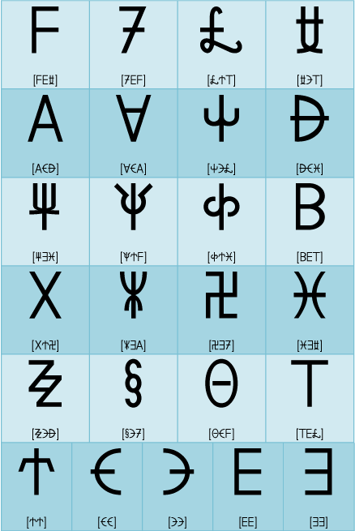
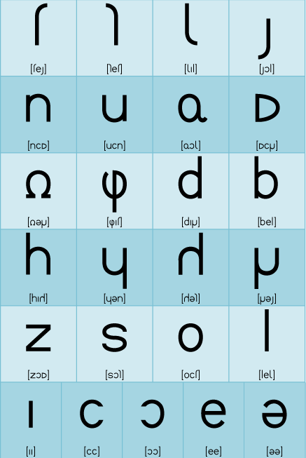

Sitemap
Contents Menu
Return
Introduction
Greetings
Lunar alphabet
Word Order
Tense
Adverb
Copula
Interrogative
Imperative
Pronoun
Preposition
Relative
Accent
Number
Conjunction
Epilogue
Welcome to Lein's Lesson! Hello, I'm Shion, the student. I'm 17 years old and in the second year of high school. Soonoyun [soÀên…îj…Øn]! My name is Lein (pronounced like lain). I'll be your teacher. I'm a high school student in Arbazard. I'm not supposed to speak English, but the author made me speak it :) Well, what is the first word you said? Uh... soonoyun (pronounced like sohh-noh-yoon)? And where is Arbazard? I can't find it in the world atlas. Soonoyun means hello. It can mean good morning, good afternoon or good evening. Isn't it useful? Arbazard is a country in Atolas, the planet where I live. Arka is spoken in this country. Arka isn't a language of Earth, is it? Now I understand why I haven't seen such characters.  These characters are the capital letters of the Lunar alphabet. There are 20 consonants and 5 vowels, so there are 25 letters in the Lunar alphabet. The Lunar alphabet is called hacm in Arka. They are too difficult to remember! Maybe I can remember E and F, but... To tell you the truth, we seldom use capital letters, so all you have to do is to memorize the following lower-case letters.  OK, maybe I can remember these letters because their strokes are simple, and some of the letters are similar to those of the Latin alphabet. The Lunar alphabet is from another world, but there are only a few simple letter shapes, and some of the letters of the Lunar alphabet are similar to those of the Latin alphabet, I think. You can read more about the relationship between the Lunar alphabet and the Latin alphabet here. The article on fonts is a bit difficult. The lower-case letters are easier, but I'll have to memorize them later. Right now, I'll just transcribe Arka into the Latin alphabet. I'll practice with romanized Arka until I get used to the Lunar alphabet. Most of the letters of romanized Arka are familiar. But the pronunciation of "x" and "c" are strange. "x" is pronounced [ É] (like "sh" in "shop"), and "c" is a rolled R (pronounced like "rr" in the Spanish word "burro"). So, "c" represents an alveolar trill, whereas "r" is an alveolar approximant (rolled r) as in American English. That is, "c" is [r] while "r" is […π]. How about the other letters...? "y" ([j]) is like "y" in "yes." "j" ([ í]) is like "s" in "vision". "h" ([h]) is like "h" in "happy." "w" ([w]) is like "w" in "wise." While you're getting used to the Lunar alphabet, you should use romanized Arka. "tx" ([t É]) is pronounced like "ch" in "church" and "ts" is pronounced like "ts" in cats. The Lunar alphabet was made specifically for Arka, so you can write Arka more efficiently with it. Learn the letters one by one. They have many symmetric shapes; I would often mistake "tes" for "ket" when I was little. But I think in time you'll come to distinguish them, just as you distinguish "d" and "b" of the Latin alphabet. It seems I have to learn them in a step-by-step fashion by writing them by hand. Anyway, I'll practice using the romanization. "x" is like "sh" in "shop". "c" is like "rr" in the Spanish word "burro". That's all for now. These girls are the heroines of a book named "Book of Shion." Nias Avelantis drew the pictures including Alia and Arshe who will be introduced later. We thank him for his great work.